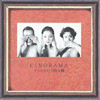

|
 | #結構後になって日記ページ修正してたりすると大変な事になってたり。 いい加減だな昔の俺、今もか。 今更この月買ったCD見て良かったのはシノラマの1枚目。 |
| 2000.1 / 2000.4 |
-2000.3.26
#富山に行ってまいりました、お仕事で。
で、ですね。とりあえず土曜日だけはお休みだったので、渋谷に行ってよーやくShi-Shonen/Do3をゲット、戸田誠司....若い.....。 あといつのまにか出ていたイノトモ/タンポポも購入。いやぁなんちゅーかその一曲目、すげー良い曲、しみじみ、また繰り返し聴いてます。その後ちょっとばっかし飲みに行って、関西人が二名ほどウチに宿泊。ドレミファソラシドシシドルミを懐かしそうに聴く関西人がその内一名。ヤバ。
で、それが昨日の話で今日は日曜なのにお仕事。帰りがけにThe Flying Lizardsを古本屋さんで\1000で購入。そして実家でキムタクのBL(っちゅーらしいですね、キムタクのドラマ)なんか見てたりしてたり。ふぁぁぁ、ねむい。
-2000.3.21
#やればできるじゃん、2日連続更新。といっても日記だけですけど。
やっぱし連休遊んだ後はやる気あまりでずに、7時くらいに会社を出て携帯の機種変更をしにフラフラしてました。J-PhoneのDN-02にしちゃいました、まめぞー2というやつ。どうでもイイですね。
あと、帰りがけに古本屋でNIRVANA/INCESTICIDEなんて今更買いました。あと岡崎京子の愛の生活ってマンガも買いました。そのマンガ読みながらそのCD聴いてたらなんだかもっともっとダメな生活したくなってきました。
-2000.3.20
#ここはじめてから今だかつて無かったほど更新サボってしまいました、一ヶ月間も...お仕事忙しかったのとスノボに行ってたのと、なんだかやる気が出なかったためです。まぁ、CD買ったらちょくちょくアップはしてたんですけど、その、ゴメンナサイ一回サボリはじめるとキリ無いもので...とりあえずこの間はあんま何も無かったかな？ステレオラブ + 嶺川貴子のライヴ見たくらいだと思います。あとは仕事して仕事して時々遊んでました。あと、一個ほど年を食っちゃいました。
てなわけで、土日は菅平でスノボしてました。で、月曜は洗濯日で家でテロテロしてて、ちょっと実家に戻ってました。戻っていた所、ウチのオヤジ殿が教え子のライヴに行く(ウチのオヤジは元中学教師だったり)との事で、ちょっと話を聞いてみるとKnitting Factoryとかでやっていた人らしく、ちょっと興味を抱いて(オヤジと一緒に)明大前の"Kit Ailck Art Hall"と言う所へ行ってみました。
ちなみに明大前ってはじめて降りたんですけど、ちょっと歩くといきなりモダーンミュージック(PSFレーベル主催のレコード屋)があるという素晴らしいロケーションで....住みたくなっちゃいました。で、モダーンミュージック自体も初めて入ってみたんですが、笑っちゃうくらい俺好みなレコード屋さんでした。80年代ノイズやサイケ、フリーミュージック、アバンギャルド。特に日本のマイナー系の充実は素晴らしかったです。あまり時間無くってゆっくり見れなかったのが残念でした。ちなみにそれでも買っちゃいましたシノラマ/3つのウソと5時の鐘とZNR/BARRICADE 3を、それぞれ中古で\1000でした。CHE-SHIZUも\1000で欲しかったんですけど、持ち合わせが全然無くって...ダメでした。
ちなみにライヴですが面白かったです。詳細はこっちに書きますけど、どーもDOCTOR NERVEのN.DikovskyやElliot Sharp等のKnitting Factory系の人達と結構共演してる人みたいですね、世の中どこでどう繋がってるかわからないモノですね...(今回はなんか偶然な気がしませんでしたけど)